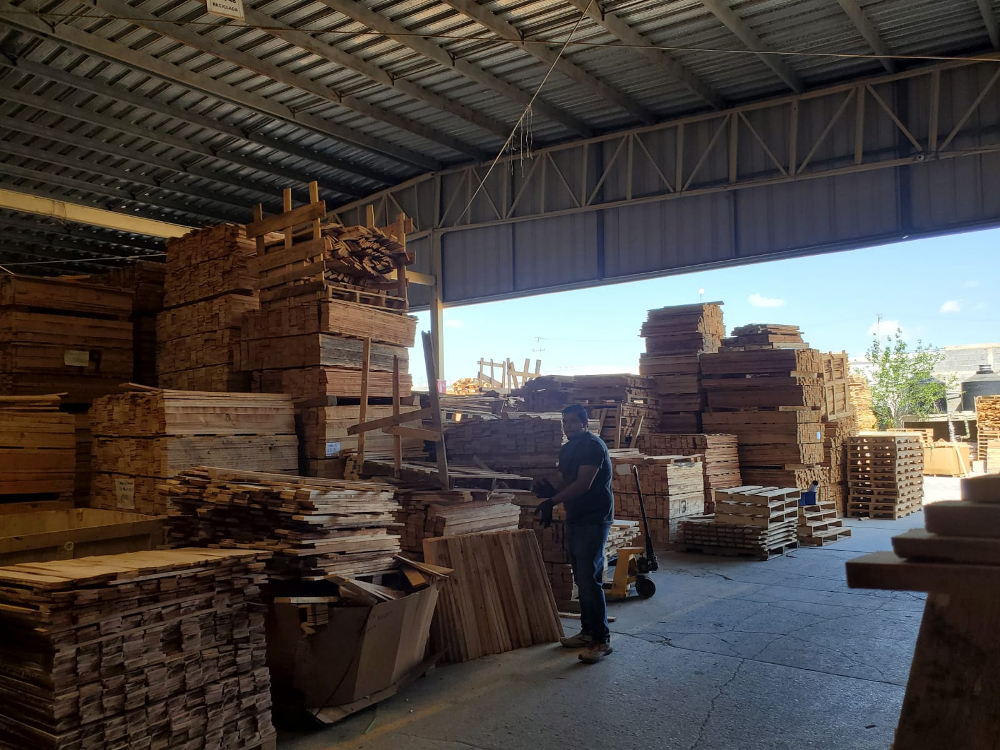

Servicios y Suministros Titan S.A. de C.V. es empresa multifuncional especialisada en la manofactura de tarimas con mas de 20 años de experiencia brindamos la mejor calidad de tarimas en el mercado, nosotros trabajando alrededor de tus nesecidades para generar un pedido de tarimas especificadas para ciertas tareas, tareas tales como soportar cierta cantidad de peso, determinado tamaño, todo tipo de especificaciones seran tomadas encuenta para entregar un producto de alta calidad según sus necesidades.
También contamos con venta de madera de todo tipo de materiales tablas, triplays, tarimas, nos especialisamos en este ambito de produccion así también como la compra de materiales reciclables en proporciones grandes.
En Servicios y Suministros Titan te ofrecemos las mejores oportunidades de diferentes pociciones con una amplia variedad, tu estancia y trabajo será basada en tus habilidades dentro de tu empleo de trabajo. Contamos con las siguientes vacantes de posiciones dentro de la empresa:
El tarimero se encarga de trabajar con la manofactura de las ditintas tarimas que se elaboran dentro de la empresa sin importar su tamaño o el material de que son hechas las tarimas.
El ayudante es encargado de suplir a todos los tarimeros, ademas son los encargados de distribuir todos los clavos, barrotes y tablas dentro de la empresa.
El montacarguista es encargado de mover grandes cantidades de tablas, barrotes y tarimas. Se tomarán encuenta sus conocimientos prebios en el manejo y habilidad de uso del montacargas.
El cortador es el encargado cortar tablas, triplays y barrotes, se le solicita se una persona cuidadosa en el manejo de herramientas de corte para evitar accidentes.